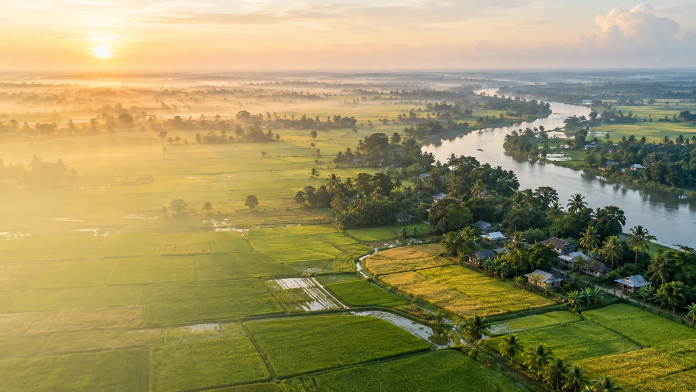

📅 Seasonal Calendar
View allKey activities for major crops in Bangladesh
—
Weather, soil, market and AI guidance for Bangladesh—designed to help every farmer act with confidence.
Key activities for major crops in Bangladesh
…
Schemes and services available to farmers

Keep field drainage clear before expected rainfall.
Good conditionReal-time, reliable and local sources